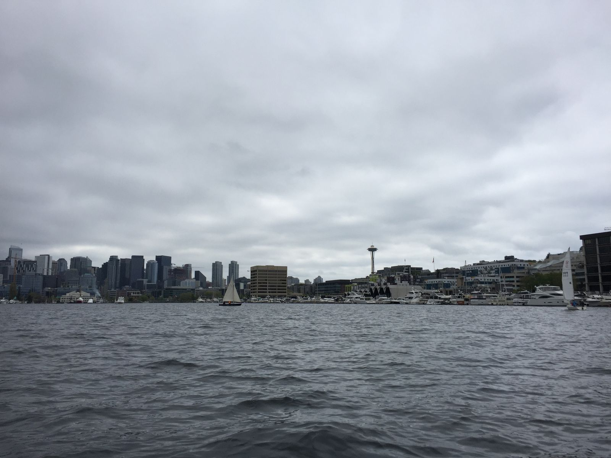
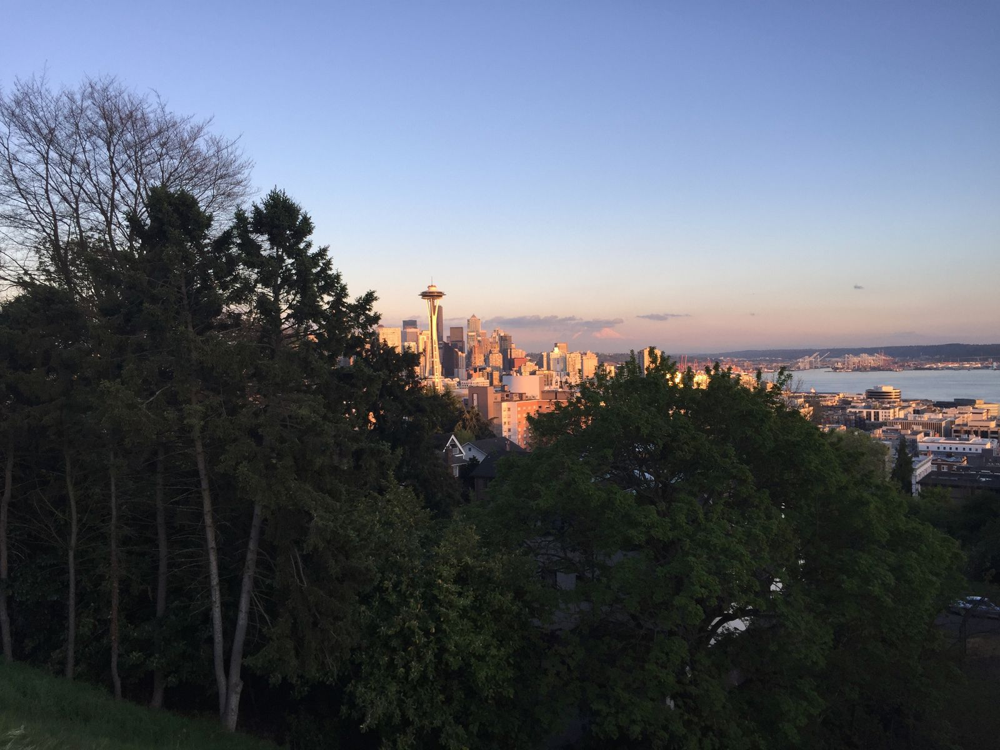

Quieter Seattle
After a quick sail on Lake Union, I headed north of the University of Washington to meet up with a different college friend, who I will be staying with until my flight home on Monday night. It's a bit nice to get away from the hustle and bustle of downtown, though I also greatly enjoyed my time in the downtown area.

This afternoon we walked all around the neighborhoods here, including Ravenna Park, Kerry Park, and Green Lake Park, where my friend ran into three of her co-workers. As makes for a good afternoon, I had a cappuccino, croissant, and gelato. After a thai food dinner, we stopped by a grocery store to pick up food for her annual "Hats on Cats" Easter party tomorrow.

I'm pretty tired. It's bedtime now. I will post cat pictures tomorrow.